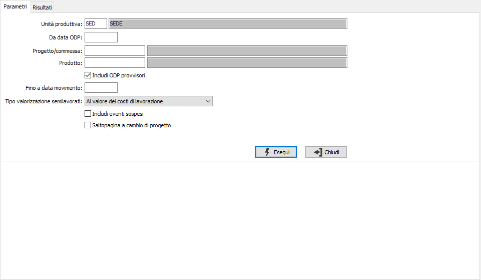
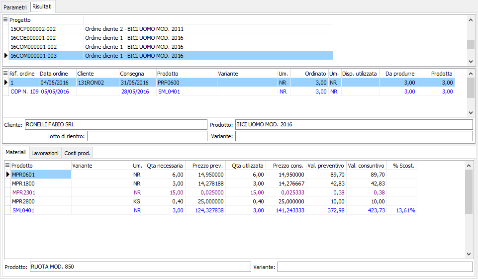
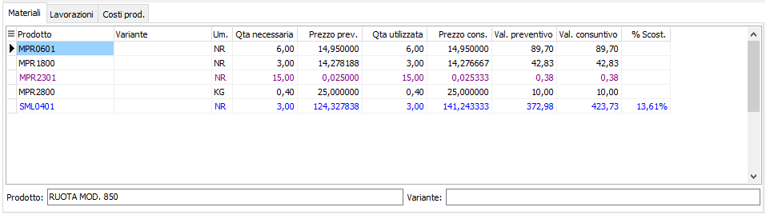
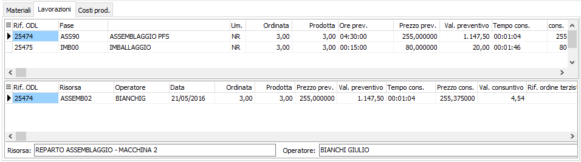
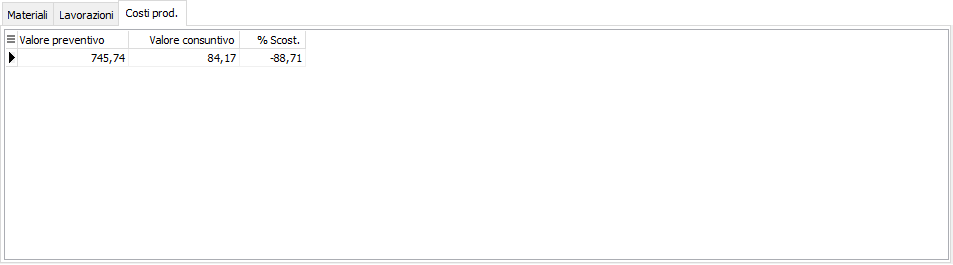

Raffronto costi progetti
La funzione consente l’analisi preventiva e consuntiva di uno specifico progetto nella sua globalità (tenendo conto anche dei semilavorati collegati al progetto); consente un’analisi puntuale dei costi preventivi e consuntivi distinti fra materiali, costi di lavorazione e costi di produzione.
Nella pagina dei parametri è possibile scegliere l'unità produttiva, se gestite in configurazione le unità produttive multiple; sono presenti i criteri di selezione data ODP per inizio elaborazione, progetto e prodotto; è possibile includere nell'analisi gli ODP provvisori spuntando l'apposita casella; è possibile impostare un limite di data relativo alla lettura dei movimenti di magazzino; spuntando la casella "Includi eventi sospesi" è possibile includere anche gli eventi che non hanno ancora generato un versamento di quantità per avere un’effettiva consuntivazione dei costi anche in assenza di versamento del composto.
è possibile definire il metodo di calcolo del prezzo per i semilavorati, questo parametro non ha effetto nel caso in cui sia già stato eseguito l'aggiornamento valori progetto in quanto in tal caso i prezzi preventivi (materiali, lavorazioni, costi di produzione) vengono recuperati dalla valorizzazione scheda tecnica memorizzata a livello di progetto:
Standard: utilizza il tipo di calcolo definito sulla scheda tecnica
Al valore delle materie prime: utilizza come prezzo il valore derivante dalla somma dei costi dei componenti
Al valore dei costi di lavorazione: utilizza come prezzo il valore dalla somma dei costi dei componenti aumentato dei costi di lavorazione
Al valore dei costi di produzione: utilizza come prezzo il valore dalla somma dei costi dei componenti aumentato dei costi di lavorazione e dei costi di produzione
Come su scheda tecnica: non effettua la valorizzazione della scheda tecnica, ma valorizza il semilavorato come specificato sulla scheda tecnica del relativo composto
Premendo il pulsante Esegui si avvia l'elaborazione che porterà alla pagina dei risultati.

La pagina dei Risultati presenta una sezione superiore con una griglia che riporta i progetti ed una griglia che, per ogni progetto, riporta i riferimenti ordine con le quantità ordinate, utilizzate, da produrre e prodotte; la sezione inferiore contiene i valori suddivisi per Materiali, Lavorazioni e costi di produzione

La pagina dei Materiali riporta i materiali derivanti dagli ODL con la relativa valorizzazione preventiva, e consuntiva in relazione ai versamenti effettuati; in colore differente vengono mostrati i semilavorati. Nel caso in cui sia già stato eseguito l'aggiornamento valori progetto i prezzi preventivi vengono recuperati dalla valorizzazione scheda tecnica memorizzata a livello di progetto.

La pagina delle Lavorazioni riporta tutte le fasi di lavorazione con sotto il dettaglio dei singoli ODL; per le fasi esterne la valorizzazione preventiva proviene dall'ordine terzista, per le fasi interne dalla valorizzazione del ciclo. Nel caso in cui sia già stato eseguito l'aggiornamento valori progetto i prezzi preventivi vengono recuperati dalla valorizzazione scheda tecnica memorizzata a livello di progetto.

La pagina Costi produzione presenta il valore dei costi di lavorazione derivanti dai versamenti e dai rientri, per le fasi esterne. Nel caso in cui non sia già stato eseguito l'aggiornamento valori progetto i prezzi preventivi non saranno valorizzati, altrimenti vengono recuperati dalla valorizzazione scheda tecnica memorizzata a livello di progetto.
